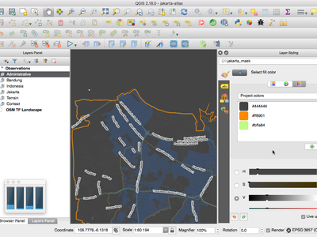
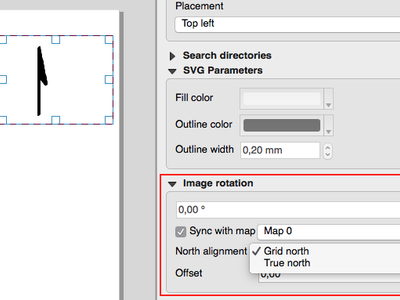

Jurnalul schimbărilor pentru QGIS 2.18¶

Aceasta este ultima versiune din seria 2.x. Versiunea cu Suport pe Termen Lung (LTR) va rămâne 2.14.x. Această versiune oferă îmbunătățiri incrementale față de cea anterioară. Cea mai mare parte a activității este concentrată, în prezent, pentru dezvoltarea QGIS 3.0, care reprezintă prima versiune din următoarea generație, planificată pentru sfârșitul trimestrului 1 din anul 2017.
Mulțumiri
We would like to thank the developers, documenters, testers and all the many folks out there who volunteer their time and effort (or fund people to do so). From the QGIS community we hope you enjoy this release! If you wish to donate time, money or otherwise get involved in making QGIS more awesome, please wander along to qgis.org and lend a hand!
QGIS is supported by donors and sponsors. A current list of donors who have made financial contributions large and small to the project can be seen on our donors list. If you would like to become and official project sponsor, please visit our sponsorship page for details. Sponsoring QGIS helps us to fund our six monthly developer meetings, maintain project infrastructure and fund bug fixing efforts. A complete list of current sponsors is provided below - our very great thank you to all of our sponsors!
QGIS este un soft gratuit iar dvs. nu aveți obligația de a plăti pentru folosirea lui - de fapt, vrem să încurajăm oamenii de oriunde să-l folosească, indiferent de starea financiară sau socială - având convingerea că, punerea la dispoziția utilizatorilor a posibilităților de decizie spațială, va duce la o societate mai bună pentru întreaga omenire.
- Sponsorii versiunii QGIS 2.18.0
- Generalități
- Simbologie
- Etichetarea
- Randarea
- Gestiunea Datelor
- Formulare și Controale grafice
- Compozitorul de Hărți
- Processing
- Caracteristică: Algoritmul punctului de pe o suprafață
- Caracteristică: Algoritmul de dizolvare din Processing acceptă câmpuri multiple
- Caracteristică: S-au optimizat calculele algoritmului de decupare
- Caracteristică: Algoritm pentru casetele de încadrare
- Caracteristică: Algoritm de îmbinare a liniilor conectate
- Caracteristică: Algoritmul de delimitare a geometriei
- Furnizorii de Date
- QGIS Server
- Plugin-uri
- Programabilitatea
- Caracteristică: Noi clase PyQGIS în 2.18
- Caracteristică: Noi funcții pentru expresii
Sponsorii versiunii QGIS 2.18.0¶
Anual primim, de asemenea, sprijin de la diverse organizații care ne apreciază munca pe care o depunem și care ar dori să faciliteze efortul susținut de dezvoltare a proiectului. Acești sponsori sunt enumerați mai jos, alături de mulțumirile noastre!
 Grupul utilizatorilor QGIS Elvețieni, Elveția Grupul utilizatorilor QGIS Elvețieni, Elveția |
  Statul Vorarlberg, Austria Statul Vorarlberg, Austria |
 Oficiul Lucrărilor Publice, Irlanda, Irlanda Oficiul Lucrărilor Publice, Irlanda, Irlanda |
 GAIA mbh, Germania GAIA mbh, Germania |
 Sourcepole AG, Elveția Sourcepole AG, Elveția |
 Grupul utilizatorilor QGIS din Germania, Germania Grupul utilizatorilor QGIS din Germania, Germania |
|
|
|
|
|
|
|
|
|
|
|
|
|
|
|
|
|
|
|
|
|
|
|
|
|
|
|
|
|
|


{kind=link}
Generalități¶
Caracteristică: Link-uri automate, în rezultatele instrumentului de identificare¶
Orice trimiteri http sau mailto, existente în valorile atributelor, vor fi convertite automat în linkuri, acestea fiind disponibile în panoul de identificare a rezultatelor.

Această funcționalitate a fost dezvoltată de Sandro Mani (Sourcepole)
Caracteristică: Deplasarea rotiței mouse-ului deasupra butoanelor de alegere a culorii¶
În QGIS 2.18 există posibilitatea deplasării rotiței mouse-ului deasupra oricărui buton glisant din dialogul de alegere a culorii, pentru a realiza incrementarea valorii. Această facilitate este indicată pentru modificări ale componentelor de culoare.

Această funcționalitate a fost finanțată de Nyall Dawson (North Road)
Această funcționalitate a fost dezvoltată de: Nyall Dawson (North Road)
Caracteristică: S-au adăugat scheme de culoare particularizate la meniul butonului de culoare¶
QGIS 2.18 oferă utilizatorilor posibilitatea de a stabili dacă o schemă de culori, creată de către utilizator, ar trebui să apară în meniul butonului de culoare. Această setare este controlată prin dialogul de alegere a culorii, în fila listelor. Trebuie doar să adăugați o nouă schemă de culori, apoi, în meniul schemei bifați opțiunea de „afișare pe buton”. Este o comandă facilă atunci când aveți seturi de palete comune și dacă doriți ca acestea să fie disponibile instantaneu prin intermediul meniului de culori.

Această funcționalitate a fost finanțată de North Road
Această funcționalitate a fost dezvoltată de: Nyall Dawson (North Road)
Simbologie¶
Caracteristică: De acum, selectorul de culoare este încorporat în panoul de configurare a stilurilor straturilor¶
În QGIS 2.18, dacă efectuați un clic pe un buton de culoare din interiorul panoului cu stilurile stratului, atunci dialogul de alegere a culorii se va deschide în interiorul panoului, și nu într-o fereastră de dialog separată. Acest lucru permite modificarea interactivă a culorilor, cu previzualizarea imediată a rezultatului.

Această funcționalitate a fost finanțată de North Road
Această funcționalitate a fost dezvoltată de: Nyall Dawson (North Road)
Etichetarea¶
Caracteristică: Lista de substituție acceptă etichetarea¶
S-a adăugat capacitatea de a specifica o listă cu substituții de text, care vor fi aplicate etichetelor. De exemplu, la abrevierea tipurilor de străzi.
Utilizatorii pot exporta și importa liste de substituții pentru a ușura reutilizarea și partajarea.

Această funcționalitate a fost finanțată de North Road
Această funcționalitate a fost dezvoltată de: Nyall Dawson (North Road)
Caracteristică: Algoritm îmbunătățit de plasare pe linie a etichetei¶
Modul de etichetare paralelă a straturilor de tip linie a fost mult îmbunătățit, cu un nou algoritm care să evite plasarea etichetelor peste părțile zimțate ale entităților.

Această funcționalitate a fost finanțată de Andreas Neumann
Această funcționalitate a fost dezvoltată de: Nyall Dawson (North Road)
Caracteristică: Etichetarea poligoanelor se face folosind etichete de-a lungul perimetrului¶
S-a adăugat un nou mod de etichetare a poligoanelor, al căror perimetru este etichetat cu ajutorul etichetării curbate.

Această funcționalitate a fost finanțată de North Road
Această funcționalitate a fost dezvoltată de: Nyall Dawson (North Road)
Randarea¶
Caracteristică: Previzualizarea plăcuțelor raster (WMTS și straturi XYZ)¶
În versiunile anterioare ale QGIS, utilizatorii trebuiau să aștepte până când descărcarea tuturor plăcuțelor unui strat se încheia, pentru a vedea harta rezultată. De acum, acest lucru a fost remediat, plăcuțele apărând pe canevas imediat ce au fost descărcate, experiența utilizatorului îmbunătățindu-se prin reducerea timpului până la afișare. Mai mult decât atât, plăcuțele descărcate anterior, cu rezoluții mai mici sau mai mari, pot fi utilizate de către funcția de previzualizare, în zonele în care plăcuțele cu rezoluția corectă nu au fost descărcate încă.

Această funcționalitate a fost finanțată de Land Information din Noua Zeelandă
Această funcționalitate a fost dezvoltată de Martin Dobias (Lutra Consulting)
Caracteristică: Randarea rasterelor poate fi anulată (straturi WMS, WMTS, WCS și XYZ)¶
Această funcționalitate îmbunătățește experiența utilizatorului, atunci când se lucrează cu straturi raster care provin de la servere aflate la distanță. Anterior, trebuia să se aștepte descărcarea completă, pentru a putea mări sau deplasa iarăși harta, pentru că interfața cu utilizatorul rămânea, între timp, înghețată. De acum, acest lucru s-a remediat, randarea straturilor raster putând fi anulată în orice moment.
Această funcționalitate a fost finanțată de Land Information din Noua Zeelandă
Această funcționalitate a fost dezvoltată de Martin Dobias (Lutra Consulting)
Gestiunea Datelor¶
Caracteristică: S-a adăugat un fanion numai pentru entitățile selectate¶
Plugin-ul de editare offline este un plugin implicit din QGIS, care vă permite să lucrați offline cu un set de date aflat la distanță (ex.: dintr-o bază de date), să îl editați în teren, apoi să îl resincronizați la revenirea în birou. Acest lucru extinde offline posibilitățile de editare asupra subseturilor de straturi mari.

Această funcționalitate a fost finanțată de DB Fahrwegdienste GmbH
Această funcționalitate a fost dezvoltată de Matthias Kuhn (OPENGIS.ch)
Formulare și Controale grafice¶
Caracteristică: Este permis controlul etichetelor pentru controale grafice de editare¶
Este permisă manevrarea etichetelor pentru controalele grafice de editare dintr-o formă. În interfața de proiectare drag and drop, un dublu clic pe un element va permite controlul în cazul în care eticheta ar trebui să afișată în mod individual, pentru fiecare element.
În plus, este posibil ca butoanele de grupare/degrupare să fie afișate în controlul grafic al relației de referință, lucru util pentru ascunderea relațiilor 1:n, unde relația copil nu poate exista fără relația părinte.

Această funcționalitate a fost finanțată de Cantonul Zug, GIS-Fachstelle
Această funcționalitate a fost dezvoltată de Matthias Kuhn (OPENGIS.ch)
Caracteristică: Vizibilitate condițională pentru file și pentru grupuri de casete¶
S-a adăugat o nouă opțiune de configurare pentru afișarea condiționată, sau pentru a ascunde filele și grupul de casete din interfața de proiectare drag and drop.
Configurarea se face printr-un dublu clic pe arborele din interfața de configurare a câmpurilor.
Se poate introduce o expresie pentru a controla vizibilitatea. Expresia va fi re-evaluată la fiecare schimbare a valorilor formei, iar fila și grupul de casete se afișează/ascunde în mod corespunzător.

Această funcționalitate a fost dezvoltată de Matthias Kuhn (OPENGIS.ch)
Caracteristică: Valori implicite ale câmpurilor, pe partea de client¶
Este permisă setarea unei expresii, pentru un câmp dintr-un strat vectorial care este utilizat la evaluarea unei valori prestabilite. Expresiile cu valori implicite pot utiliza proprietăți ale entității care există la momentul apelării, cum ar fi geometriile digitizate. Expresiile cu variabile pot fi utilizate, de asemenea, în expresiile cu valori implicite, facilitând introducerea numelui unui utilizator, a orei și datei curente, calea proiectului, etc.

Această funcționalitate a fost finanțată de DB Fahrwegdienste GmbH
Această funcționalitate a fost dezvoltată de: Nyall Dawson (North Road)
Compozitorul de Hărți¶
Caracteristică: Săgeată pentru Nordul Adevărat¶
QGIS 2.18 are suport pentru orientarea săgeții nordului, din compozitor, înspre Nordul Real. Anterior, toate săgețile erau aliniate cu nordul grilei, care nu este adecvat pentru regiunile polare sau pentru proiecțiile care nu au nordul orientat în sus (cum ar fi unele sisteme de proiecție din Africa de Sud). De acum, puteți alege orientarea săgeții fie înspre nordul grilei, fie înspre nordul adevărat. Există, de asemenea, un unghi opțional de compensare, care poate fi folosit pentru a specifica o convergență a grilei, în scopul orientării săgeților înspre nordul magnetic!

Această funcționalitate a fost finanțată de Norwegian Polar Institute’s Quantarctica project
Această funcționalitate a fost dezvoltată de: Nyall Dawson (North Road)
Processing¶
Caracteristică: Algoritmul punctului de pe o suprafață¶
Acest nou algoritm este similar cu algoritmul centroizilor, în schimb acolo unde un centroid poate cădea în afara entității căreia îi corespunde, algoritmul «Punctului de pe o suprafață» asigură crearea unui punct care se află în interiorul entității poligonale (sau care atinge linia căreia îi corespunde, în cazul straturilor de tip linie).

Această funcționalitate a fost finanțată de North Road
Această funcționalitate a fost dezvoltată de: Nyall Dawson (North Road)
Caracteristică: Algoritmul de dizolvare din Processing acceptă câmpuri multiple¶
Algoritmul de dizolvare acceptă, de acum, valorile din mai multe câmpuri. În versiunile de QGIS anterioare, o dizolvare putea grupa entitățile după valoarea dintr-un singur câmp.

Această funcționalitate a fost finanțată de North Road
Această funcționalitate a fost dezvoltată de: Nyall Dawson (North Road)
Caracteristică: S-au optimizat calculele algoritmului de decupare¶
Algoritmul de procesare clip a fost optimizat pentru scenarii de utilizare comune, având ca rezultat creșterea dramatică a vitezei pentru operațiile de tăiere. De exemplu:
Decuparea un strat cu drumuri, cu 1 milion de linii, în funcție de 2 poligoane
Decuparea unui strat de tip punct, cu 5 milioane de adrese, în funcție de 2 poligoane

Această funcționalitate a fost finanțată de North Road
Această funcționalitate a fost dezvoltată de: Nyall Dawson (North Road)
Caracteristică: Algoritm pentru casetele de încadrare¶
Acest nou algoritm calculează caseta de încadrare (anvelopa) pentru fiecare element prezent în stratul de intrare.

Această funcționalitate a fost finanțată de North Road
Această funcționalitate a fost dezvoltată de: Nyall Dawson (North Road)
Caracteristică: Algoritm de îmbinare a liniilor conectate¶
Acest algoritm îmbină toate părțile conectate ale geometriilor MultiLineString în geometrii simple LineString. În cazul în care unele părți ale geometriilor MultiLineString de intrare nu sunt conectate, geometria rezultantă va consta într-un MultiLineString, care conține toate liniile care au putut fi îmbinate plus părțile de linie neconectate.

Această funcționalitate a fost finanțată de North Road
Această funcționalitate a fost dezvoltată de: Nyall Dawson (North Road)
Caracteristică: Algoritmul de delimitare a geometriei¶
Acest nou algoritm returnează limita combinatorie închisă a geometriilor de intrare (adică limita topologică a geometriei). De exemplu, limita unei geometrii poligonale va consta în șiruri de linii pentru fiecare inel din poligon, iar o geometrie liniară va avea o limită care constă din punctele de început și de sfârșit ale liniei. Acest algoritm este valabil numai pentru straturile de tip poligonal sau liniar.

Această funcționalitate a fost finanțată de North Road
Această funcționalitate a fost dezvoltată de: Nyall Dawson (North Road)
Furnizorii de Date¶
Caracteristică: Suport nativ pentru plăcuțele straturilor XYZ¶
Plăcuțele rasterelor în format XYZ sunt de acum acceptate de furnizorii de date WMS, care permite utilizatorilor să afișeze hărți din alte surse, fără a mai necesita plugin-uri terțe, cum ar fi QuickMapServices sau OpenLayers.
To add connections to XYZ layers, just open browser dock widget, look for item called „Tile Server (XYZ)” and right click it to get a popup menu with „New connection” action. You will be asked for URL, in which {x}, {y}, {z} will be replaced by the actual tile numbers according to the current map view. For example, to add OpenStreetMap base map, one may use this URL:
http://c.tile.openstreetmap.org/{z}/{x}/{y}.png
Furnizorul de date suportă, de asemenea, codificarea numerelor pentru plăcuțele XYZ în „quadkeys” utilizate de Bing. Folosiți pur și simplu {q} în loc de {x}, {y} și {z} în URL.

Această funcționalitate a fost dezvoltată de Lutra Consulting
Această funcționalitate a fost dezvoltată de Martin Dobias (Lutra Consulting)
QGIS Server¶
Caracteristică: Posibilitate de fragmentare a informațiilor geometrice obținute de la server despre entități¶
Este necesară geometriilor care conțin curbe (CircularArc, CompoundCurve, CurvePolygon), dar clientul web (ex.: Clientul Web QGIS) nu se poate ocupa de afișarea acestor tipuri de geometrie.
Această caracteristică poate fi activată în fila „Serverului OWS” din dialogul „Proprietăților Proiectului”.

Această funcționalitate a fost finanțată de Andreas Neumann
Această funcționalitate a fost dezvoltată de Marco Hugentobler (Sourcepole)
Plugin-uri¶
Caracteristică: DB Manager: S-a adăugat capacitatea de actualizare a Stratului SQL¶
Cu această facilitate utilizatorul poate actualiza sursa de date a stratului, în cazul în care aceasta se bazează pe o cerere SQL.
Această funcționalitate a fost finanțată de Ifremer
Această funcționalitate a fost dezvoltată de 3Liz
Programabilitatea¶
Caracteristică: Funcția de referențiere liniară GEOS este expusă la QgsGeometry¶
O nouă funcție, QgsGeometry::lineLocatePoint(), a fost adăugată pentru obținerea distanței, de-a lungul unei șir de linii, către cea mai apropiată poziție a unui anumit punct din acel șir liniar.
Această funcționalitate a fost finanțată de North Road
Această funcționalitate a fost dezvoltată de: Nyall Dawson (North Road)
Caracteristică: Noi clase PyQGIS în 2.18¶
Noi clase de baze¶
- QgsAnnotation - an interface for annotation items which are drawn over a map
- QgsFeedback - a base class for feedback objects to be used for cancellation of something running in a worker thread
- QgsOptionalExpression - an expression with an additional enabled flag
Noi clase GUI, Controale grafice reutilizabile¶
- QgsExpressionLineEdit - includes a line edit for entering expressions together with a button to open the expression creation dialog. This widget is designed for use in contexts where no layer fields are available for use in an expression and space is constrained.
- QgsTabWidget - similar to QTabWidget but with additional methods to temporarily hide/show tabs
Caracteristică: Noi funcții pentru expresii¶
QGIS 2.18 adaugă mai multe funcții noi pentru expresii, inclusiv funcții de interpolare a unghiului/distanței.
line_merge: îmbină o geometrie MultiLineString în LineStrings conectateboundary: returnează limita topologică a unei geometrii, și anume, în cazul poligoanelor aceasta este un MultiLineString care reprezintă inelele poligonuluiangle_at_vertex: returnează unghiul mediu (bisectoarea) pentru o geometrie, pentru vertexul cu indicele specificatdistance_to_vertex: returnează distanța, de-a lungul unei geometrii, până la vertexul cu indicele specificatline_interpolate_angle: calculează unghiul interpolat față de o geometrie, la distanța specificată, de-a lungul acelei geometriiline_interpolate_point: returnează un punct de pe linie, situat la o anumită distanțăline_locate_point: returnează distanța, de-a lungul liniei, până la cea mai apropiată locație față de un punct specificat
Această funcționalitate a fost finanțată de Andreas Neumann
Această funcționalitate a fost dezvoltată de: Nyall Dawson (North Road)